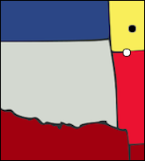
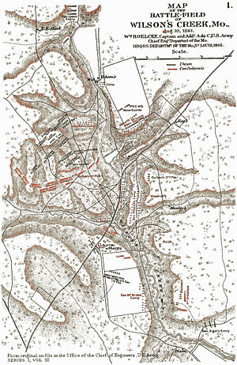
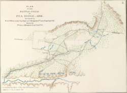

| Union | August 10, 1861 | Confederate |
|---|---|---|
| Nathaniel Lyon Samuel D. Sturgis | Commanders | Sterling Price Ben McCulloch Nicholas Bartlett Pearce |
| 5,430 | Strength | 12,120 |
| 1,317 | Casualties and Losses | 1,232 |
At the beginning of the war, Missouri had declared itself to be "armed neutral." It would have weapons, but only to protect itself, never to attack, and wouldn't give men or supplies to either side. On May 10, 1861, Governor Claiborne F. Jackson had the Missouri Volunteer Militia train in Lindell Grove, on the outskirts of St. Louis. Jackson had secretly obtained artillery from the Confederates, and Lyon was concerned that they would try to take the St. Louis arsenal. Lyon surrounded the militia's camp with Union soldiers, forcing them to surrender. The next day, the Missouri State Guard was created. On May 12, 1861, the Price-Harney Truce was brokered. This said that the Union Army would cooperate with the MSG to protect Missouri from outside interference. Jackson publicly agreed with the truce but in actuality was undermining it the whole time. By August 9, Lyon's troops had taken the capital and were waiting in Springfield. A combined Missouri/Arkansas/Confederate force was approaching.
On August 10, Lyon split his army into two columns and attacked the opposing army about 12 miles south of Springfield, at Wilson's Creek. The Rebel cavalry took the first blow, falling back, but more Confederate forces soon stabilized their position. The Confederates tried to attack three times that day, killing Lyon, but never broke the Union line. After the third attack, however, the Confederates withdrew, at which point Sturgis realized that his troops were exhausted and his ammunition low and ordered a retreat to Springfield. The Confederates were too disorganized to pursue.

| Union | March 6-8, 1862 | Confederate |
|---|---|---|
| Samuel R. Curtis | Commanders | Earl Van Dorn |
| 10,500 | Strength | 16,500 |
| 1,384 | Casualties and Losses | 2,000 |
The Battle of Wilson's Creek had pushed nearly the Missouri State guard out of Missouri. By spring of 1862, Curtis was determined to force the Confederates back into Arkansas. Curtis found a good defensive position on the north side of Little Sugar Creek. He fortified it and placed artillery, expecting an assault from the south. At the same time, Van Dorn was aware of Curtis's movements and was determined to destroy his army and reopen the gateway to Missouri. He decided to march around Curtis's flank and attack from the rear, forcing the army to move north or be destroyed. On March 4, 1862, Van Dorn split his army into two groups and set them to march around the Federals, trying to destroy any lines of communication they found along the way. To gain more speed, Van Dorn left behind his supply wagons, a decision which later proved crucial.
On March 7, the Federals, having learned of the plan, marched north, hoping to intercept the Confederate army. Two Confederate generals were killed, halting the Rebel attack. Still, by nightfall, the Confederates controlled Elkhorn Tavern and the Telegraph road area. The next day, however, Curtis counterattacked, successfully using his artillery to force the Rebels back. Van Dorn was short on ammunition and ran away.
Missouri remained under Union control for the next two years.
